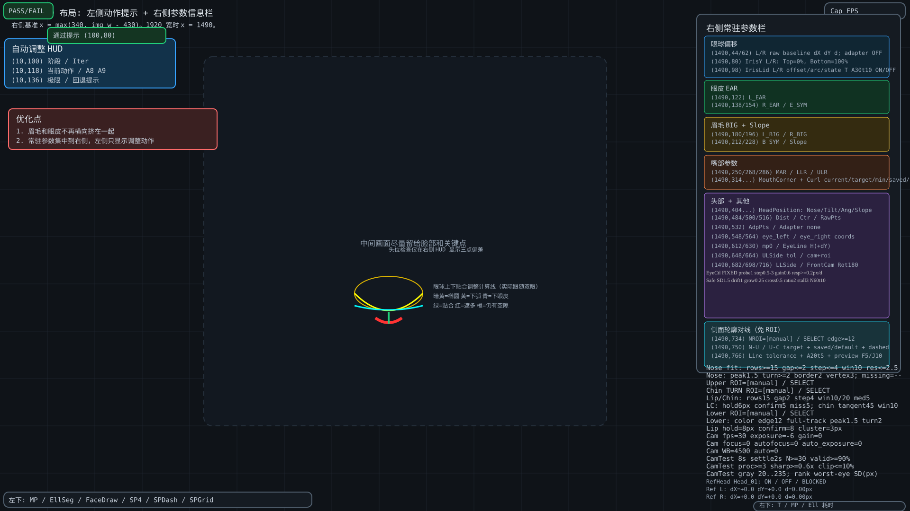

眼球步长：原空白右栏 y=580/596 常驻EyeCtl/Safe两行，字号0.29、16px行距，显示固定/自适应/回退模式与全部控制参数；左侧y=100/118/136显示调整过程。默认固定1°，自适应上限3°。
眼球目标适配修正已暂停：y=44/62显示L/R对保存基准的原始dX/dY/距离，不使用head_adapter换算；布局位置不变。
正面方向：原右栏 y=716 的 FrontCam 行追加 Rot180=True/False，表示检测前180°旋转开关；不新增行。
相机标定：右栏y=926/942/958显示驱动参数，y=974/990/1006显示采样及质量门槛，16px行距；Qt过程日志在画面外。
上下唇增强稳定：y=910显示hold8px / confirm8 / cluster3px。
上唇独立ROI y=814，下唇独立ROI y=878，下唇颜色边缘/整段轮廓规则 y=894；下巴转折点ROI y=830；轮廓规则 y=846，位置保持6px/5帧及转折切线45度规则 y=862。侧面橙框=嘴部，浅蓝框=下巴。
手动鼻部 ROI：y=734 显示 NROI 坐标或 SELECT；右侧 y=782/798 为 Nose fit / Nose 筛选规则；侧面原坐标行丢失显示 nose=--。

参考头：右栏 y=1022 状态；y=1038 L差值；y=1054 R差值。绿色空心圈是参考头实际检测点，黄色实心点是当前检测点；差值=当前头-参考头，仅显示、不参与控制。